bbsa/
├── README.md
├── app.R
├── bbsa.Rproj
├── movies.RData
└── utils.R
1 directory, 5 filesCreating a shiny app-package
Building a shiny app-package with devtools & usethis
shiny
golem
packages
In this post, I’ll be using devtools and usethis to develop duap, an R package that contains a shiny application (i.e., devtools/usethis app-package).
The R package development workflow is well documented in R Packages. I’ve written this post because I frequently encountered R developers who are comfortable with shiny application development, but have never developed an R package.
This post walks through converting an existing shiny application into an app-package in detail because R package development differs from creating a standalone shiny application. My hope is that by reading this will prevent you from having to rebuild your application entirely from scratch.
I’ve organized the app-package development process into three areas: Start, Build, and Use.
Start covers the steps required to begin building a shiny app withing a package framework (from the console and IDE).
Build covers the development process, which includes writing and storing code, data, external resources (i.e., data), documentation, and testing.
Use shows how developers can launch their application using the given framework/package locally (i.e., within the RStudio (Posit) IDE).
The GitHub repo with the code for duap is located here if you’d like to follow along.
Why an app-package?
Building a shiny app as a package is highly recommended. Both the golem and leprechaun frameworks convert your shiny application into an R package, and while a package might seem like overkill, when you consider the additional development tools accessible with R packages, I think you’ll agree shiny applications are a great fit for R packages.
What makes a package?
You’ve probably seen one of the following quotes,
“’RStudio and
devtoolsconsider any directory containingDESCRIPTIONto be a package’ - R Packages
‘all a project needs to be a package is a directory of
R/files and aDESCRIPTIONfile.’ - Packages Chapter of Mastering Shiny
So which is it–a DESCRIPTION file or a DESCRIPTION file and a directory of R/ files?
We can use the app stored in bbsa to conduct an experiment. Below are the initial files:
Note that there is no DESCRIPTION file in bbsa.
Initial .Rproj file
If we open the bbsa.Rproj file with a text-editor, we see the following:
Version: 1.0
RestoreWorkspace: Default
SaveWorkspace: Default
AlwaysSaveHistory: Default
EnableCodeIndexing: Yes
UseSpacesForTab: Yes
NumSpacesForTab: 2
Encoding: UTF-8
RnwWeave: Sweave
LaTeX: XeLaTeXThese are settings for our shiny app project. Lets see what happens if we create an R/ folder (with a utils.R file) and a DESCRIPTION file.
R/ & DESCRIPTION
The R/utils.R file will hold the contents of utils.R in the root folder:
point_plot <- function(df, x_var, y_var, col_var, alpha_var, size_var) {
ggplot2::ggplot(data = df,
ggplot2::aes(x = .data[[x_var]],
y = .data[[y_var]],
color = .data[[col_var]])) +
ggplot2::geom_point(alpha = alpha_var, size = size_var)
}The contents of the DESCRIPTION file are below (adapted from R Packages):
Package: myShinyAppPkg
Title: What the Package Does (One Line, Title Case)
Version: 0.0.0.9000
Authors@R:
person("First", "Last", , "first.last@example.com",
role = c("aut", "cre"))
Description: What the package does (one paragraph).
License: `use_mit_license()`, `use_gpl3_license()` or friends to pick a
license
Encoding: UTF-8
Roxygen: list(markdown = TRUE)
RoxygenNote: 7.2.3bbsa now has the following files and folders:
bbsa/
├── DESCRIPTION
├── R
│ └── utils.R
├── README.md
├── app.R
├── bbsa.Rproj
├── movies.RData
└── utils.R
2 directories, 7 filesLet’s take a quick look at the IDE to confirm none of the Build tools are available:
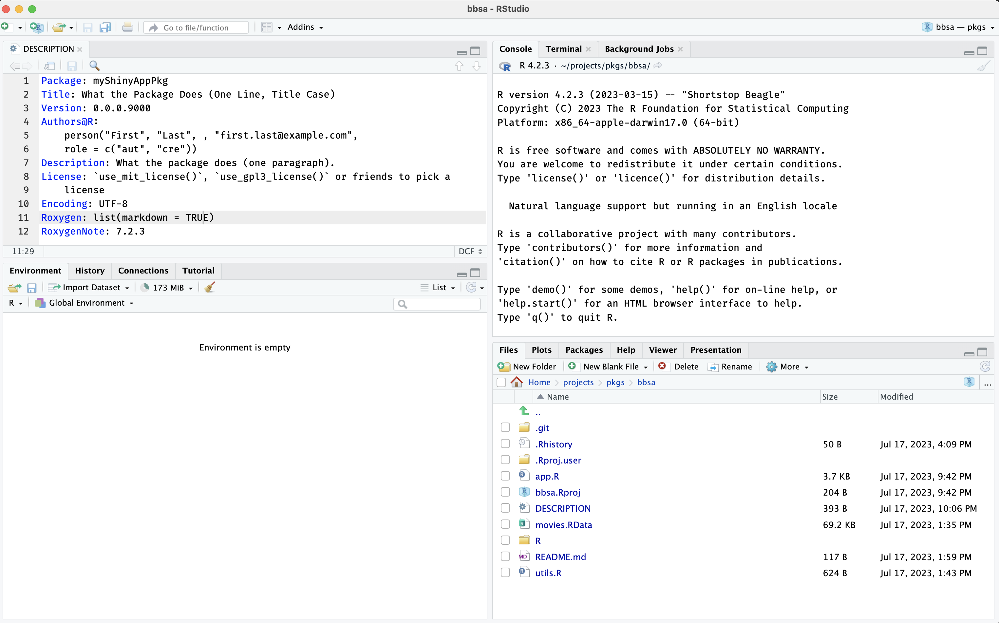
Click on Session > Terminate R… > Yes and open the bbsa.Rproj file with a text-editor again:
Package .Rproj file
Expand the code below to view the new bbsa.Rproj:
show/hide package .Rproj
Version: 1.0
RestoreWorkspace: Default
SaveWorkspace: Default
AlwaysSaveHistory: Default
EnableCodeIndexing: Yes
UseSpacesForTab: Yes
NumSpacesForTab: 2
Encoding: UTF-8
RnwWeave: Sweave
LaTeX: XeLaTeX
BuildType: Package
PackageUseDevtools: Yes
PackageInstallArgs: --no-multiarch --with-keep.sourceWe can see three new lines have been added to bbsa.Rproj:
BuildType: Package
PackageUseDevtools: Yes
PackageInstallArgs: --no-multiarch --with-keep.source
It’s not important that you know what each of these mean in detail (but you’ll see the third one again during package development)
Let’s take another look at RStudio to review the available panes:
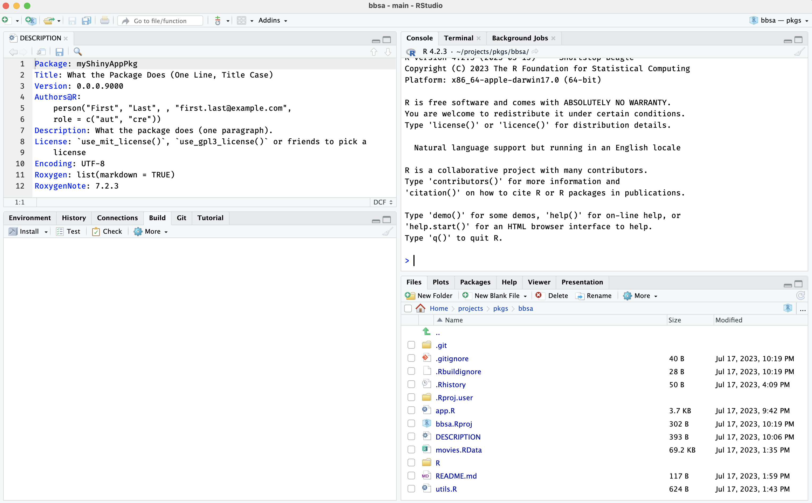
We can see the Build pane has been added to the IDE!
What happened to R/utils.R?
But wait–if you open R/utils.R, you’ll notice the file is now empty:
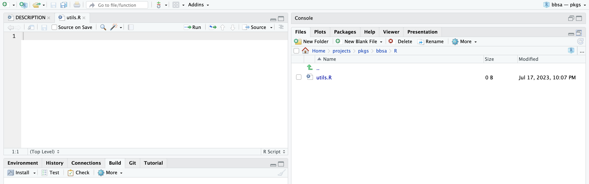
R/utils.R has been cleared out!Recap
Adding a DESCRIPTION file to your project will convert it to an R package, but don’t store any .R files in the R/ directory until it’s been converted to a package (i.e., until the Build pane is available).
Start
Below I’ll cover creating an R package from the Console and using the New Project Wizard
From the Console
If I am creating a package from the console, the function for building a new package is usethis::create_package():
usethis::create_package(path = "path/to/app-package/folder")A new RStudio session will open (and the name of the project–i.e., the name of the .Rproj file–will be identical to the package name).
To create a shiny app package, I’ll install devtools (which also installs usethis).
install.packages("devtools")
library(devtools)From a Shiny app
Converting an existing shiny app into an R package is covered in Mastering Shiny, but it doesn’t cover how this conversion happens. This section will assume your app is a bare-bones shiny app (like this bare-bones shiny app bbsa).
From the Project Wizard
If I am using RStudio’s New Project Wizard to create a new shiny app package, I’d see the following defaults:
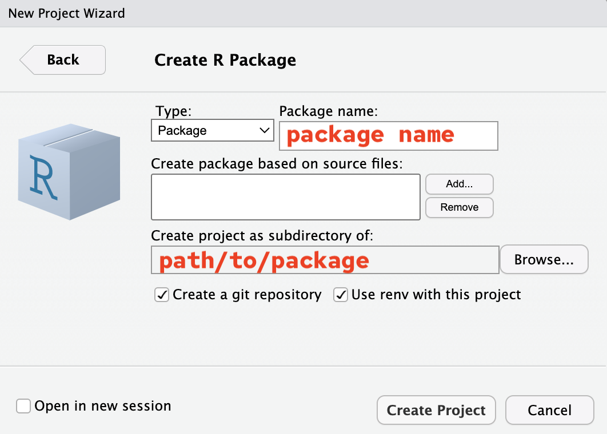
usethis::create_package project setupThe new package built from the console will have the following folder and files:
duap/
├── DESCRIPTION
├── NAMESPACE
├── R/
└── duap.Rproj
1 directory, 3 filesPackages built from the New Project Wizard will have a few additional folders and files:
duap/
├── DESCRIPTION
├── NAMESPACE
├── R/
│ └── hello.R
├── man/
│ └── hello.Rd
├── myRPkg.Rproj
└── renv/
├── activate.R
├── sandbox/
│ └── R-4.2
└── settings.dcf
4 directories, 7 filesThese additional files are:
hello.Rin theR/folder
hello.Rdin theman/folder
- a
renv/folder for package management
R/hello.R and man/hello.Rd are boilerplate files and can be deleted, but both package setups have a DESCRIPTION, NAMESPACE, R/ folder, and .Rproj file. These four items can be thought of as the ‘minimal package’ setup required to access RStudio’s Build tools.
Build
I’ll work through a ’minimum viable product (MVP) using the app code in the vanilla-shiny repo.
Metadata files
R packages have two metadata files: DESCRIPTION and NAMESPACE. Neither of these files have extensions, and both contain vital information for your package to function properly.
We’ll manually edit the DESCRIPTION file, but the NAMESPACE file is automatically generated during the development process.
DESCRIPTION
The DESCRIPTION file plays an important role in R packages (as we learned above)–that’s why creating this file is the first step when converting an existing app (and when creating a new golem apps).
The initial DESCRIPTION file in duap is below:
Package: duap
Title: What the Package Does (One Line, Title Case)
Version: 0.0.0.9000
Authors@R:
person("First", "Last", , "first.last@example.com",
role = c("aut", "cre"),
comment = c(ORCID = "YOUR-ORCID-ID"))
Description: What the package does (one paragraph).
License: `use_mit_license()`, `use_gpl3_license()` or friends to pick a
license
Encoding: UTF-8
Roxygen: list(markdown = TRUE)
RoxygenNote: 7.2.3The package name is automatically added, but the remaining fields need to be completed (consult R packages for more information on filling out the DESCRIPTION file).
The DESCRIPTION file in the duap prompts the RStudio IDE to activate the Build tools pane (see below):
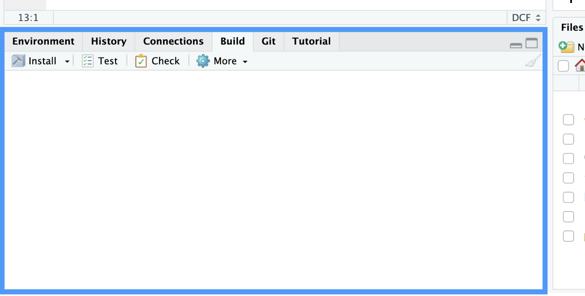
Application code
The contents of the app.R and utils.R need to be moved into the R/ folder. When developing R packages, new .R files are created with usethis::use_r().
use_r()
I’m going to create duap using modules to separate the app into the following digestible mental ‘chunks’:
The app collects the inputs in the
shiny::sidebarPanel()These values are then used to create a plot in the
shiny::mainPanel()
Based on this layout, I’ll create one module to collect and return the user-inputs (mod_var_input), and another module to display the plot (mod_display_plot).
I’ll create these files using usethis::use_r() below:
usethis::use_r("mod_var_input")✔ Setting active project to '/Users/mjfrigaard/projects/duap'
• Modify 'R/mod_var_input.R'
• Call `use_test()` to create a matching test fileusethis::use_r("mod_display_plot")• Modify 'R/mod_display_plot.R'
• Call `use_test()` to create a matching test fileThe display module also relies on a utility function (plot_points()), so I need to create a script for the utility function, which I put in a file with a name similar to the module it belongs to (i.e., utils_display_plot).
usethis::use_r("utils_display_plot")• Modify 'R/utils_display_plot.R'
• Call `use_test()` to create a matching test fileFinally, I’ll place the modules into basic ui and server arguments in a call to shiny::shinyApp():
usethis::use_r("moviesApp")• Modify 'R/moviesApp.R'
• Call `use_test()` to create a matching test fileModules consist of two functions; one in the UI (with a _ui suffix), and another in the server (with a _server suffix), but it’s common practice to combine them in a single file.
Below is the mod_var_input module:
The ui function is stored in
mod_var_input_ui:Click on Code to view the UI function in
R/mod_var_input/Rshow/hide
mod_var_input_ui <- function(id) { ns <- shiny::NS(id) shiny::tagList( shiny::selectInput( inputId = ns("y"), label = "Y-axis:", choices = c( "IMDB rating" = "imdb_rating", "IMDB number of votes" = "imdb_num_votes", "Critics Score" = "critics_score", "Audience Score" = "audience_score", "Runtime" = "runtime" ), selected = "audience_score" ), shiny::selectInput( inputId = ns("x"), label = "X-axis:", choices = c( "IMDB rating" = "imdb_rating", "IMDB number of votes" = "imdb_num_votes", "Critics Score" = "critics_score", "Audience Score" = "audience_score", "Runtime" = "runtime" ), selected = "imdb_rating" ), shiny::selectInput( inputId = ns("z"), label = "Color by:", choices = c( "Title Type" = "title_type", "Genre" = "genre", "MPAA Rating" = "mpaa_rating", "Critics Rating" = "critics_rating", "Audience Rating" = "audience_rating" ), selected = "mpaa_rating" ), shiny::sliderInput( inputId = ns("alpha"), label = "Alpha:", min = 0, max = 1, step = 0.1, value = 0.5 ), shiny::sliderInput( inputId = ns("size"), label = "Size:", min = 0, max = 5, value = 2 ), shiny::textInput( inputId = ns("plot_title"), label = "Plot title", placeholder = "Enter plot title" ) ) }The server function is stored in
mod_var_input_server:Click on Code to view the server function in
R/mod_var_input/Rshow/hide
mod_var_input_server <- function(id) { shiny::moduleServer(id, function(input, output, session) { return( list( "x" = shiny::reactive({ input$x }), "y" = shiny::reactive({ input$y }), "z" = shiny::reactive({ input$z }), "alpha" = shiny::reactive({ input$alpha }), "size" = shiny::reactive({ input$size }), "plot_title" = shiny::reactive({ input$plot_title }) ) ) }) }- View the display module here.
Standalone app function
After I’ve written the modules and utility functions, I need to add these into a standalone app function moviesApp() (stored in R/moviesApp.R).
This file contains a call to
shiny::shinyApp()and includes the module functions (in their relative positions)- Note the
ids in each module function pair must match to create the shared namespace.
moviesApp <- function() { # call to shinyApp() shiny::shinyApp( # UI ---- ui = shiny::fluidPage( shiny::sidebarLayout( shiny::sidebarPanel( # UI input module ---- mod_var_input_ui("vars") ), # UI display module ---- shiny::mainPanel( mod_display_plot_ui("plot") ) ) ), server = function(input, output, session) { # server input module (capturing inputs) ---- selected_vars <- mod_var_input_server("vars") # server display module (rendering outputs) ---- mod_display_plot_server("plot", var_inputs = selected_vars) } ) }- Note the
roxygen2
When I’m confident my code works (and the app renders), I want to make sure these functions are properly documented by describing each function with roxygen2 tags. To quickly insert a roxygen2 skeleton, use the RStudio IDE (or the keyboard shortcut: Option + Shift + Command + R)
The standard roxygen2 skeleton tags include @param, @return, @export, and @examples
@paramlists the existing arguments (or variables) for the function@returnshould be a description of the object/side-effect/thing the function produces (and any warnings or errors if used incorrectly)
The following roxygen2 tags will be used to update the NAMESPACE file (which you should never edit manually!)
@exportwill make the function available to other people when they use your package@importFromvs.@import- it’s always a good idea to be explicit about the external functions and packages you’re using, so most of the time you should use
@importFrom(there’s even a handy helperusethis::use_import_from("package", "function"))
@importshould only be used when “you make such heavy use of so many functions from another package that you want to import its entire namespace. This should be relatively rare.”
- it’s always a good idea to be explicit about the external functions and packages you’re using, so most of the time you should use
roxygen2 imports and exports are covered in more depth in R packages..
You can see the full code for point_plot() below (or follow this link to view all the modules in the R/ folder):
Click on Code to view
show/hide
#' Plot points (shiny)
#'
#' @param df input dataset (tibble or data.frame)
#' @param x_var x variable
#' @param y_var y variable
#' @param col_var color variable
#' @param alpha_var alpha value
#' @param size_var size value
#'
#' @return plot object
#' @export point_plot
#'
#' @importFrom ggplot2 ggplot aes geom_point
#'
#' @examples
#' require(duap)
#' movies <- duap::movies
#' point_plot(df = movies,
#' x_var = "critics_score",
#' y_var = "imdb_rating",
#' col_var = "critics_rating",
#' alpha_var = 1/3,
#' size_var = 2)
#' }
point_plot <- function(df, x_var, y_var, col_var, alpha_var, size_var) {
ggplot2::ggplot(data = df,
ggplot2::aes(x = .data[[x_var]],
y = .data[[y_var]],
color = .data[[col_var]])) +
ggplot2::geom_point(alpha = alpha_var, size = size_var)
}
Tip:
roxygen2 skeleton
As well as generating .Rd files, roxygen will also create a NAMESPACE for you, and will manage the Collate field in DESCRIPTION

roxygen2 skeletonTest drive
“The
load_all()function is arguably the most important part of the devtools workflow.” - R Packages, 2ed
You’ll use the devtools::load_all() function frequently while you’re developing your app-package. load_all() simulates how your functions will work when someone else uses your package. This removes the need to define them in the global workspace. It also gives you access to the functions from any add-on packages you’ve imported into your NAMESPACE (i.e., you won’t need to run library()).
I highly recommend using the keyboard shortcuts:
The full benefits of using load_all() are covered in R packages.
load_all()
After documenting everything with roxygen2, I want to make sure none of the functions are in my Environment (remove with rm() if necessary) and load the functions with devtools::load_all().
devtools::load_all()ℹ Loading duapNAMESPACE & Help pages
devtools::document() processes the roxygen2 tags to generate the NAMESPACE and the .Rd files in the man/ folder. The .Rd files are used to access the help files (i.e., package::function() can be accessed with ??function).
Managing your package NAMESPACE file is not something you do directly: it’s handled with the roxygen2 tags we covered above. The keyboard shortcuts for devtools::document() are below:
document()
Run devtools::document() when you’ve written a new function with roxygen2 tags or included a package in the DESCRIPTION file under Imports:
devtools::document()ℹ Updating duap documentation
First time using roxygen2. Upgrading automatically...
Setting `RoxygenNote` to "7.2.3"
ℹ Loading duap
Writing NAMESPACE
Writing mod_plot_ui.Rd
Writing mod_plot_server.Rd
Writing point_plot.Rd
Writing mod_var_input_ui.Rd
Writing mod_var_input_server.Rd
Writing moviesApp.RdNAMESPACE != DESCRIPTION
It’s important to understand that devtools::document() will use the roxygen2 tags to create the man/*.Rd files and update the NAMESPACE, but devtools::document() does not update the Imports: section in the DESCRIPTION.
To add packages dependencies to the DESCRIPTION, you’ll need to use the usethis::use_package() function. Read more on this topic in Confusion about Imports.
The table below shows the connection between roxygen2 tags, the resulting NAMESPACE entry, and what should be listed in the DESCRIPTION.
Checking installation
After loading and documenting the duap package, I want to make sure I can install the package into my library with devtools::install(). The keyboard shortcut for devtools::install() is below:
install()
devtools::install()── R CMD build ────────────────────────────────────────────────────────────────
✔ checking for file ‘/Users/mjfrigaard/projects/duap/DESCRIPTION’ ...
─ preparing ‘duap’: (1.8s)
✔ checking DESCRIPTION meta-information
─ checking for LF line-endings in source and make files and shell scripts (520ms)
─ checking for empty or unneeded directories
Omitted ‘LazyData’ from DESCRIPTION
─ building ‘duap_0.1.0.tar.gz’
Running /Library/Frameworks/R.framework/Resources/bin/R CMD INSTALL
--install-tests
* installing to library ...
* installing *source* package ‘duap’ ...
** using staged installation ...
** R
** byte-compile and prepare package for lazy loading
** help
*** installing help indices
** building package indices
** testing if installed package can be loaded from temporary location
** testing if installed package can be loaded from final location
** testing if installed package keeps a record of temporary installation path
* DONE (duap)Restart your R session and ensure you have a clean workspace:
Restarting R session...
* Project '~/projects/duap' loaded. [renv 0.16.0]Then load your package with library():
library(duap)You can also use Install icon in the Build pane, which installs the package, restarts the R session, and loads the package all with one click!
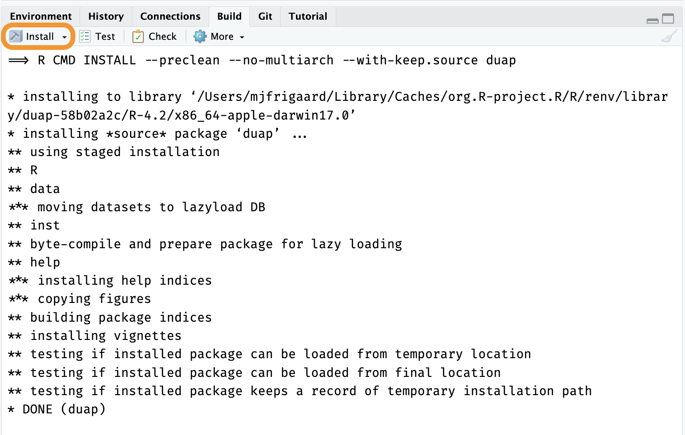
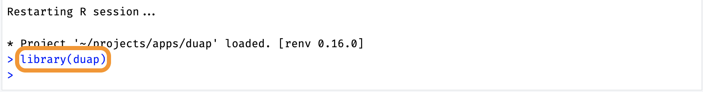
Recap: the R/ folder
The sequence I’ve demonstrated above (create .R file, write function, document with roxygen2, load, document, install) is the ‘minimal version’ of the full development workflow.
Once a ‘beta’ version of the app is deployed, you will want to come back to the app to refactor, write tests, and make sure all the items in devtools::check() pass.
Storing the application’s code in the R/ folder and (using RStudio’s build tools) keeps files organized, well documented, and self-contained:
All the code is stored in the
R/folderI’ve separated my code into smaller pieces (modules) that can be tested independently (more on this later)
My dependencies are being managed by
roxygen2anddevtools::document(), which will update theNAMESPACEwith any functions tagged with@importFrom(or@import)- I can also access functions I’ve written outside by adding
@export
- I can also access functions I’ve written outside by adding
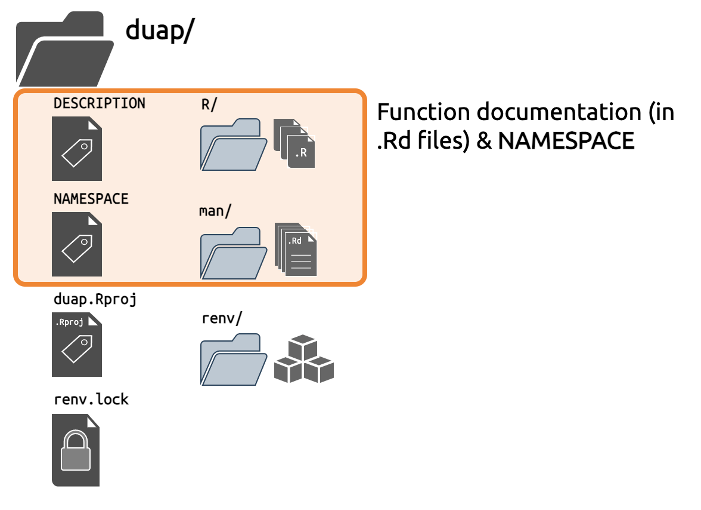
man/ folderNow that I have the R version/package management being tracked and stored with renv/ & renv.lock, function documentation in the .Rd files, the DESCRIPTION and NAMESPACE, I can move onto adding and using data in a shiny app package.
Additional package files
Most app-packages will require files beyond the .R files in the R/ folder. Apps will often use data files when they’re deployed, which we’ll cover next.
use_data_raw()
usethis::use_data() or usethis::use_data_raw() make it simple to add data to the application package:
usethis::use_data_raw("movies")✔ Creating 'data-raw/'
✔ Writing 'data-raw/movies.R'
• Modify 'data-raw/movies.R'
• Finish the data preparation script in 'data-raw/movies.R'
• Use `usethis::use_data()` to add prepared data to packageIn the data-raw/movies.R script, I want to import the movies.RData file, but where should I import it from? It depends. In R packages, data is stored in either data/ or data-raw/. To access a copy of the movies dataset in duap (i.e., with duap::movies), I can place the movies.RData file in data-raw/ and import it by adding the following to data-raw/movies.R:
## code to prepare `movies` dataset goes here
load("data-raw/movies.RData")
usethis::use_data(movies, overwrite = TRUE)Note data-raw/movies.R includes a call to usethis::use_data(), and when it’s executed, I can see a data/ folder is created and movies is saved as movies.rda:
load("data-raw/movies.RData")
usethis::use_data(movies, overwrite = TRUE)✔ Adding 'R' to Depends field in DESCRIPTION
✔ Creating 'data/'
✔ Saving 'movies' to 'data/movies.rda'
• Document your data (see 'https://r-pkgs.org/data.html')Installed package files
The inst/ folder plays a special role when developing R packages:
“When a package is installed, everything in
inst/is copied into the top-level directory of the installed package” - R Packages, 2ed
Consider the example folder and files below: file.txt, CITATION, and extdata/my_data.csv:
Source (development) form
inst/
├── file.txt
├── CITATION
└── extdata/
└── my_data.csvBinary (installed) form
file.txt
CITATION
extdata/
└── my_data.csvThe neat thing about the inst/ folder is that after we’ve loaded and installed our package, we can access the files in inst/extdata/ with the system.file() function:
If I want to test functions in duap using movies.RData (or another dataset), those should be placed in inst/extdata/
inst/
A great way to understand what files are available in inst/ when your package is to pass system.file() to fs::dir_tree():
fs::dir_tree( # wrap this in a folder tree
system.file(package = "duap"))expand to see inst/ folder contents
/path/to/installed/package/duap
├── DESCRIPTION
├── INDEX
├── LICENSE
├── Meta
│ ├── Rd.rds
│ ├── data.rds
│ ├── features.rds
│ ├── hsearch.rds
│ ├── links.rds
│ ├── nsInfo.rds
│ └── package.rds
├── NAMESPACE
├── R
│ ├── duap
│ ├── duap.rdb
│ └── duap.rdx
├── data
│ ├── Rdata.rdb
│ ├── Rdata.rds
│ └── Rdata.rdx
├── extdata
│ └── movies.RData
├── help
│ ├── AnIndex
│ ├── aliases.rds
│ ├── duap.rdb
│ ├── duap.rdx
│ ├── figures
│ └── paths.rds
└── html
├── 00Index.html
└── R.cssThe system.file() function will show me the path to the locally installed version of the package (hence the /path/to/installed/package/ at the beginning of the path).
The inst/exdata/ folder comes in handy for adding example data, but it’s also useful for application development (more on that later).
Recap: data and installed files
R Packages have a consistent and standardized way of storing data, and have designated locations for internal and external data.
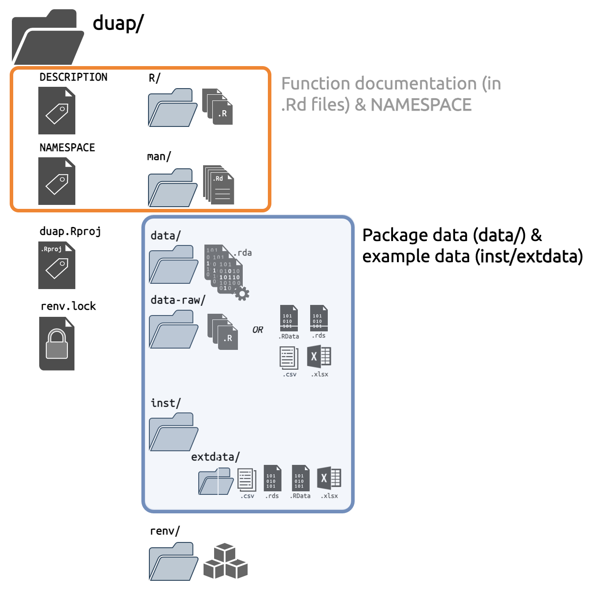
Documentation
Function documentation is handled with the R/ folder and roxygen2 comments/tags, but duap needs a README file, and a place for long-form documentation. Fortuntely, RMarkdown handles each of these well:
use_readme_rmd()
I can create a README file using usethis::use_readme_md() or usethis::use_readme_rmd()
I prefer the
.Rmdfile because it comes with executable code chunks.usethis::use_readme_rmd()✔ Setting active project to '/Users/mjfrigaard/projects/duap' ✔ Writing 'README.Rmd' ✔ Adding '^README\\.Rmd$' to '.Rbuildignore' • Modify 'README.Rmd' • Update 'README.Rmd' to include installation instructions. ✔ Writing '.git/hooks/pre-commit'- When I knit
README.Rmd, it automatically generates theREADME.mdfor the package.
- When I knit
use_vignette()
For long-form documentation I can use vignettes.
Vignettes can be created with
usethis::use_vignette()usethis::use_vignette("duap")✔ Adding 'knitr' to Suggests field in DESCRIPTION ✔ Setting VignetteBuilder field in DESCRIPTION to 'knitr' ✔ Adding 'inst/doc' to '.gitignore' ✔ Creating 'vignettes/' ✔ Adding '*.html', '*.R' to 'vignettes/.gitignore' ✔ Adding 'rmarkdown' to Suggests field in DESCRIPTION ✔ Writing 'vignettes/duap.Rmd' • Modify 'vignettes/duap.Rmd'
Vignettes are also written in RMarkdown and rendered whenever the package is built/installed.
duap/
└── vignettes/
└── duap.Rmd
1 directory, 1 fileBy combining rmarkdown and knitr, R packages have a documentation framework that has the added benefit of being somewhat fool-proof: vignettes have to successfully render for the package to be installed.
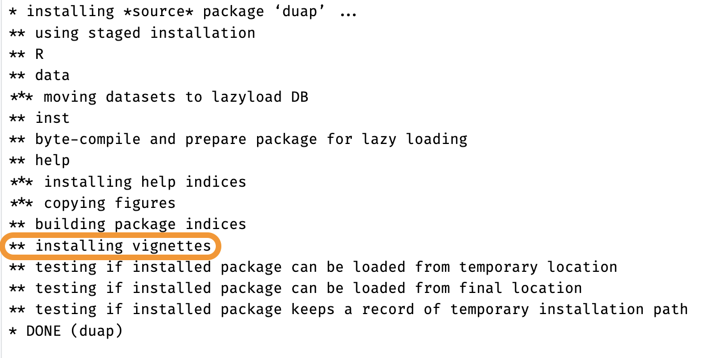
Recap: documentation
The vignettes folder will long-form documentation about how the application works, use cases, and features (and roxygen2 will document each function).
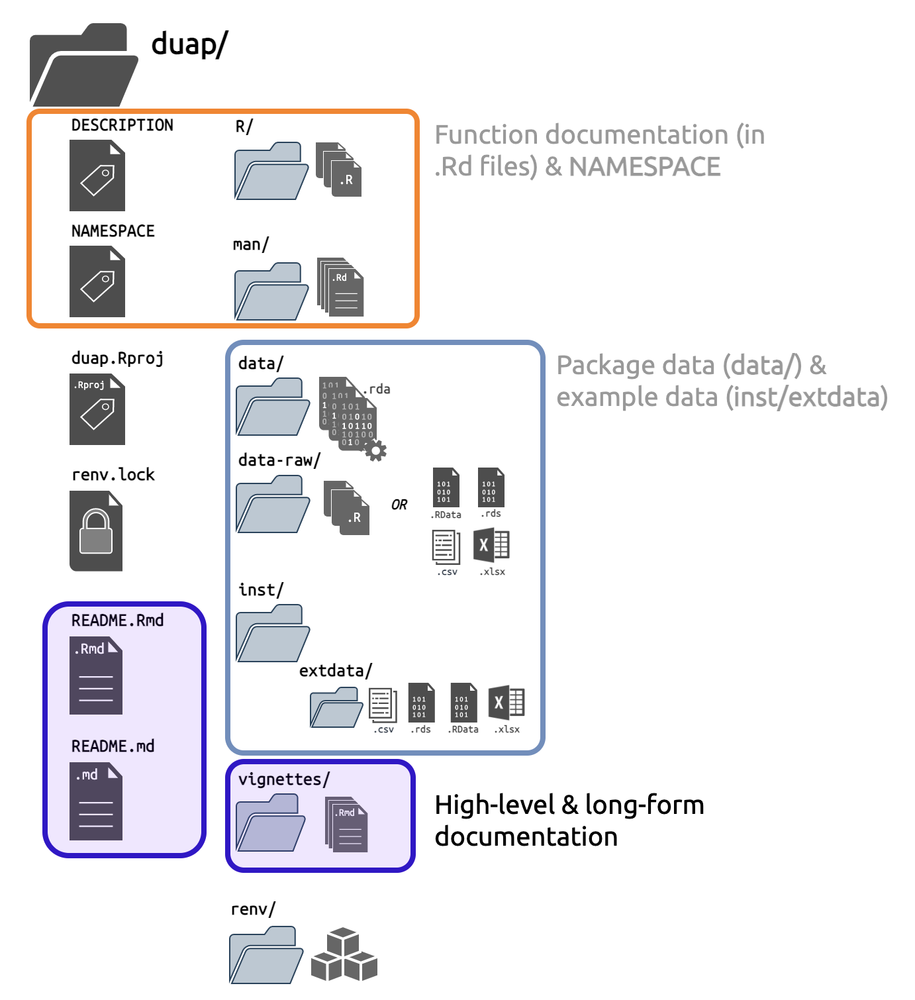
README and vignettes/Tests
Testing is an important part of any package, and apps tend to require additional tests (especially when they’re moving from ‘development’ into ‘production’ environments).
use_testthat()
To apply the testing framework provided by the testthat package. package, I’ll use usethis::use_testthat():
usethis::use_testthat()✔ Adding 'testthat' to Suggests field in DESCRIPTION
✔ Setting Config/testthat/edition field in DESCRIPTION to '3'
✔ Creating 'tests/testthat/'
✔ Writing 'tests/testthat.R'
• Call `use_test()` to initialize a basic test file and open it for editing.This creates a new tests/ folder, with a testthat/ sub-folder and script.
duap/
└── tests/
├── testthat/
└── testthat.R
2 directories, 1 fileWriting tests
testthat is designed for unit tests (i.e., testing each functional ‘unit’ in the code), but for shiny apps, we need to think beyond standard unit testing. We need to confirm the functions work and return predictable results, but we also need to make sure they play well with each other (integration tests), and that the application can be deployed (system tests).
Recap: testing
Testing is well described in the shiny documentation and in Mastering Shiny. Generally speaking, unit tests are performed with testthat, and module testing can be done with shiny::testServer(). To test the full application (or a specific behavior) use the shinytest2 package.
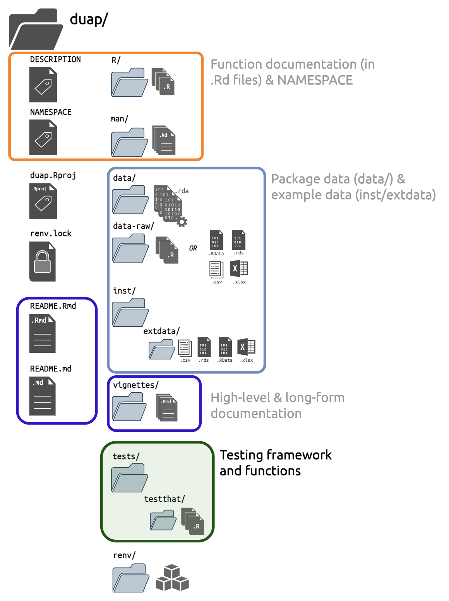
testthatUse
Using an app built as a package is similar to using any R function we’ve loaded from a package. After successfully loading, documenting, and installing the package, I can run the app by loading the duap (with library(duap)) and moviesApp():

duap::moviesApp()Recap
I’ve skipped over some important development steps covered in R packages (license, using Git/GitHub, code coverage, NEWS, etc.), and you should bookmark this text as you start developing shiny app-packages. Hopefully this post has demonstrated that by building shiny apps as R packages, a suite of developer tools are available in the RStudio IDE (and the application files and folders have a uniform structure).
duap is a substantial improvement over a vanilla shiny application–the app-package holds the code, data, documentation, and includes explicit information on the dependencies and requirements (in the DESCRIPTION and NAMESPACE).